Power, Beauty, Soul
Aston Martin's story is one of passion, near-bankruptcy, and ultimate triumph. Founded in 1913 by Lionel Martin and Robert Bamford, the name comes from Lionel's success at the Aston Clinton hill climb.
The early years were typical of British sports car makers – small production runs, racing success, and financial struggles. The 1920s and 1930s saw Aston Martins competing at Le Mans and establishing a reputation for performance.
After WWII, industrialist David Brown bought the company in 1947, beginning the golden era. The "DB" cars (David Brown) began with the DB2 in 1950. The DB4 (1958) and DB4 GT were stunning, but the 1963 DB5 became legendary as James Bond's car in Goldfinger.
The DB5 is perhaps the most famous car in cinema history. With its silver birch paint, wire wheels, and Q-branch gadgets, it defined the image of the British secret agent. Aston Martin has been associated with Bond ever since.
The 1960s brought more success with the DB6 and DBS. But the 1970s were difficult – financial troubles, ownership changes, and outdated products. The company went into receivership multiple times.
The 1987 revival came with the V8 Vantage Zagato and then the 1993 DB7, designed by Ian Callum. The DB7 saved Aston Martin, selling over 7,000 units – more than all previous Aston Martins combined.
The 2003 DB9 and 2005 V8 Vantage (modern) re-established Aston Martin as a world-class GT maker. Under Ford ownership (1987-2007), quality and volume improved. Since then, private ownership has brought new models like the One-77, Vulcan, Valkyrie, and DBX SUV.
Today, Aston Martin is a public company with a full lineup of GTs, sports cars, and the DBX SUV. The Valkyrie hypercar, developed with Red Bull Racing, shows the brand's engineering capability. And James Bond still drives an Aston.
"You only ever buy an Aston Martin with your heart."- Marek Reichman, Chief Design Officer
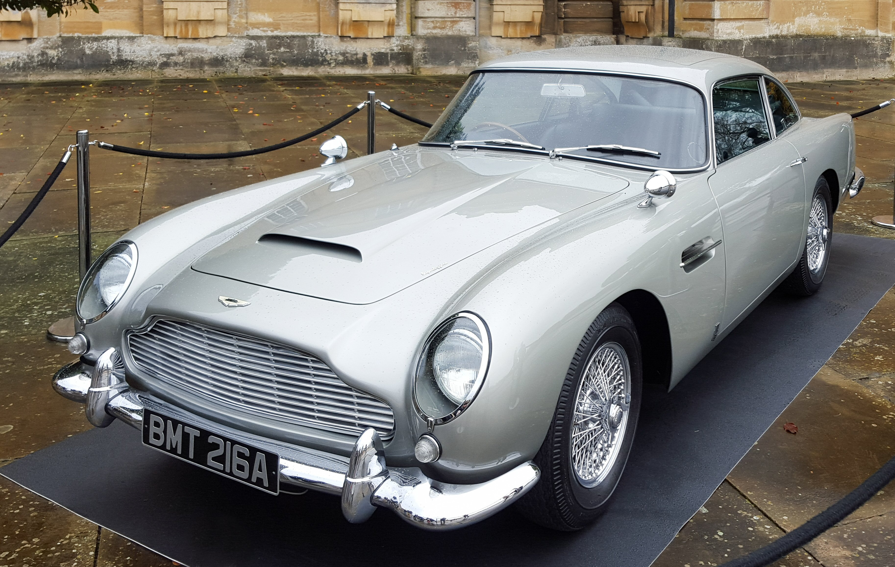
1963-1965
The most famous car in the world. James Bond's car in Goldfinger, Thunderball, GoldenEye, Casino Royale, Skyfall, Spectre, and No Time to Die. Silver birch, wire wheels, and Q-branch gadgets.
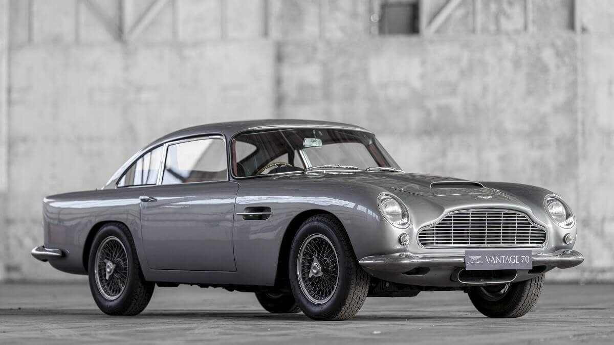
1958-1963
The first of the modern Astons. Superleggera body by Touring of Milan. The DB4 GT is one of the most valuable Astons ever.
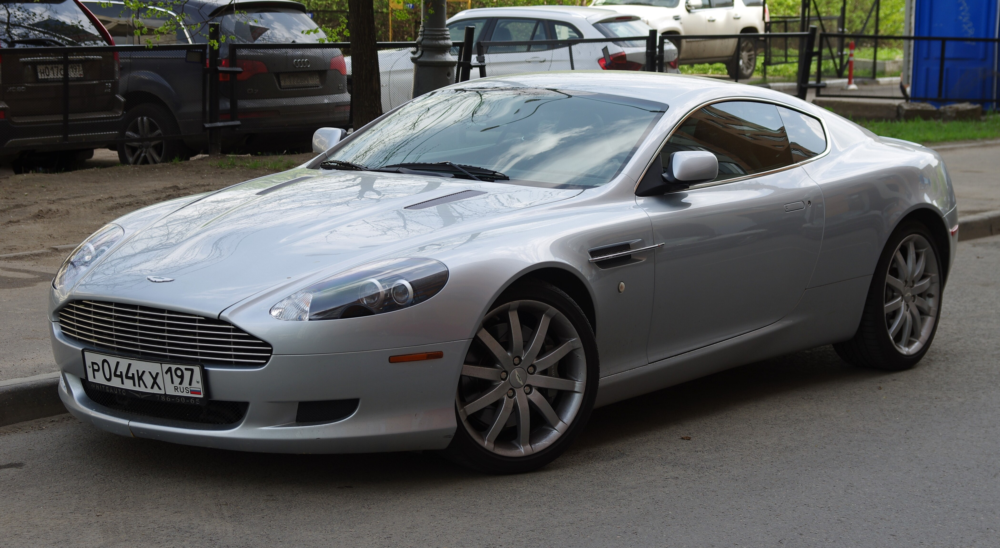
2003-2016
The car that re-established Aston Martin. Stunning design by Ian Callum, V12 power, and genuine grand touring capability.
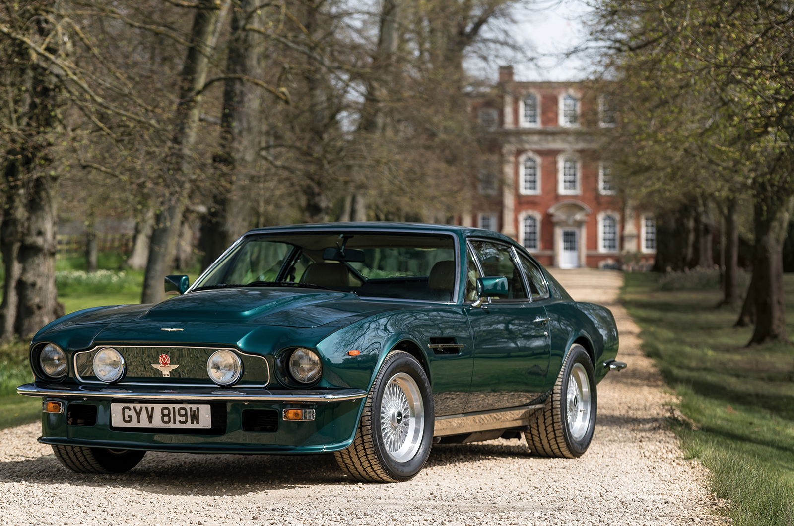
1977-1989, 2005-2017
The 1970s supercharged "Oscar India" V8 was a muscle car in a tuxedo. The modern Vantage is the driver's Aston.
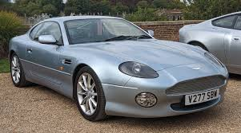
1993-2004
The savior of Aston Martin. Designed by Ian Callum, based on Jaguar XJS platform. Over 7,000 sold – more than all previous Astons combined.
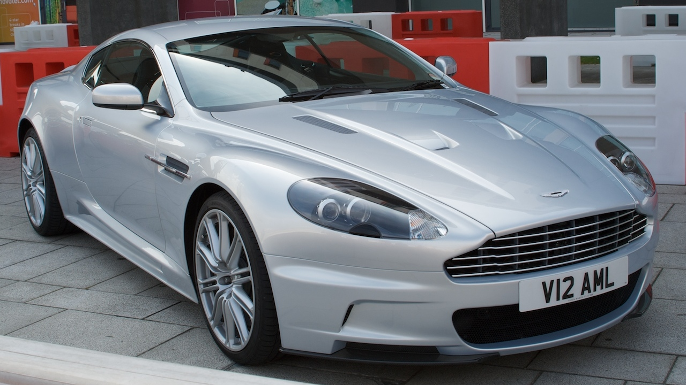
1967-1972, 2007-2012
The ultimate 1960s Aston, featured in On Her Majesty's Secret Service. The modern DBS was a 510 hp V12 flagship.
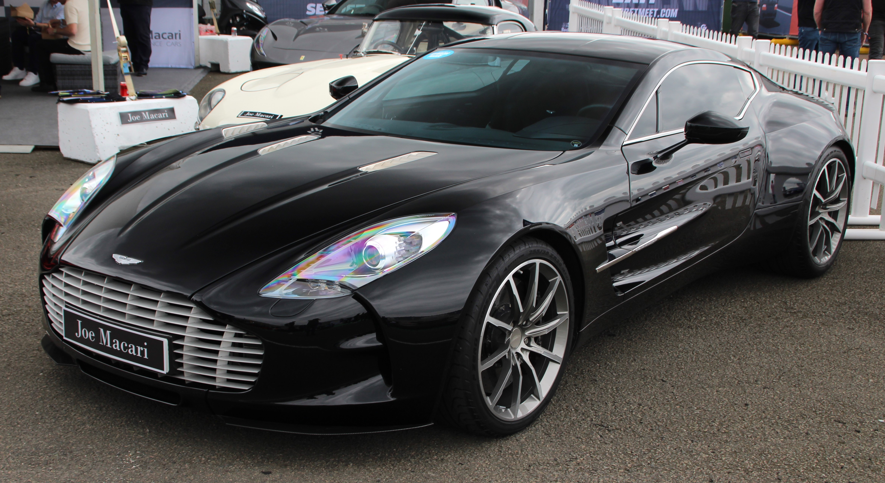
2009-2012
Limited to 77 units. 7.3L V12, 750 hp, carbon fiber body. One of the most exclusive modern Astons.
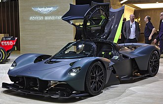
2021-present
Hypercar developed with Red Bull Racing. 1,160 hp hybrid V12, F1 technology, road-legal race car.
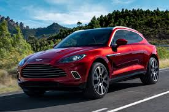
2020-present
The Aston SUV. Controversial but necessary for survival. V8 and straight-six, plus DBX707 with 707 hp – the most powerful luxury SUV.
The relationship between Aston Martin and James Bond is the most famous brand-vehicle association in cinema history. It began in 1964 with Goldfinger.
The DB5 is the definitive Bond car. In Goldfinger, Q fitted it with machine guns, oil slick, smoke screen, bulletproof shield, revolving license plates, and passenger ejector seat. It has appeared in more Bond films than any other car.
For Spectre, Aston built 10 custom DB10s exclusively for the film – never sold to the public. In No Time to Die, Bond's DB5 is fitted with working machine guns behind the headlights (a first for a film car).
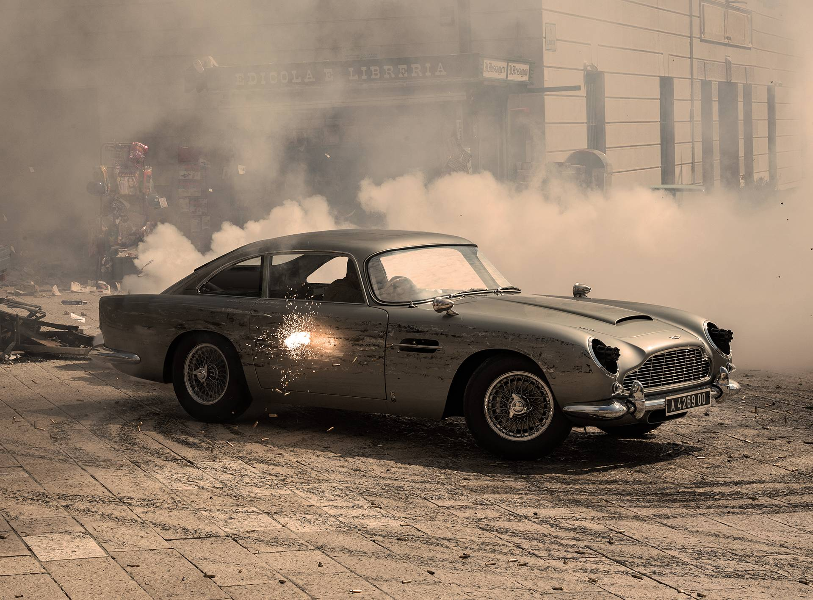
The DB cars (named for David Brown) are the heart of Aston Martin. They define the brand's identity – grand touring, beautiful, powerful, and exclusive.
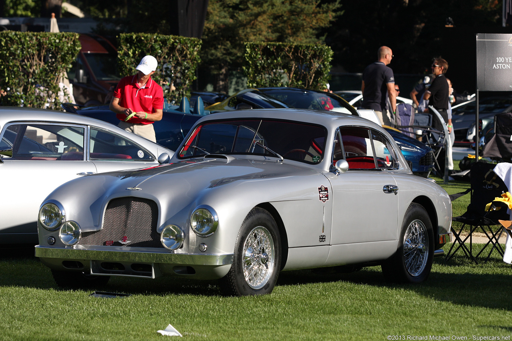
The DBR1's 1959 Le Mans win remains one of Aston's proudest moments. In 2017-2020, the Vantage GTE dominated the GTE Pro class. The Valkyrie is being developed for Le Mans Hypercar competition.
Aston Martin returned to Formula 1 as a works team in 2021, with Fernando Alonso and Lance Stroll. The team aims for race wins and championships.
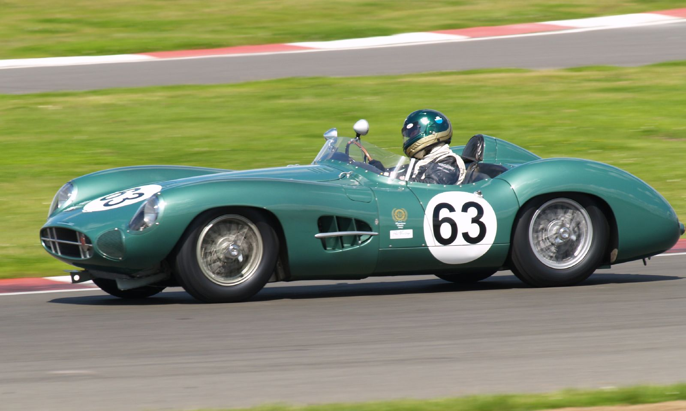